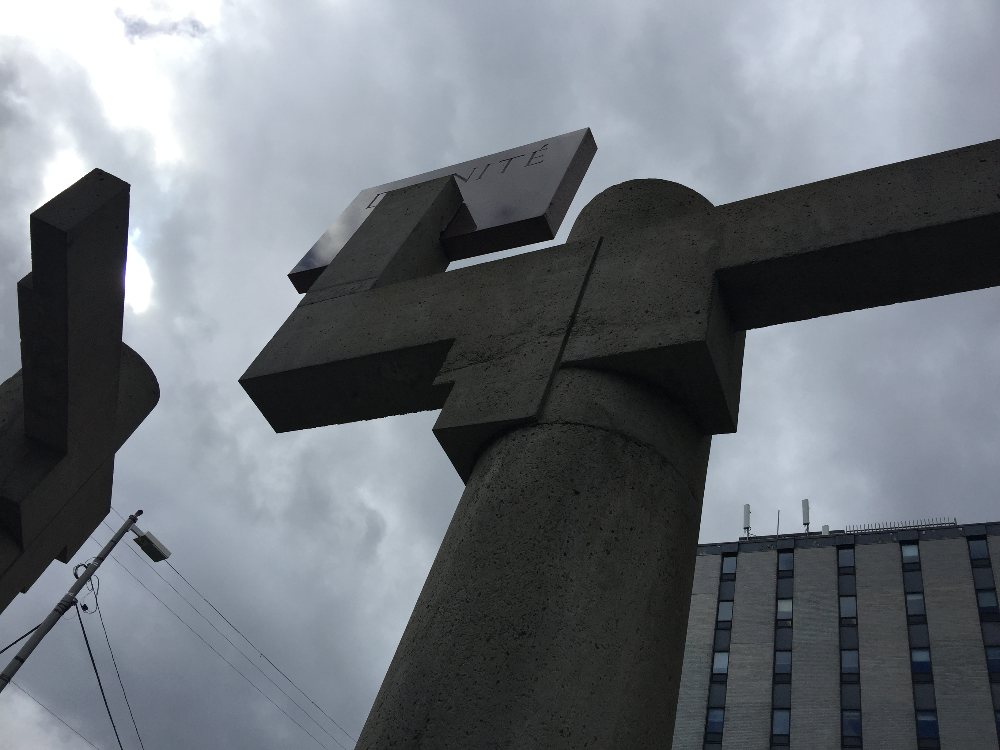
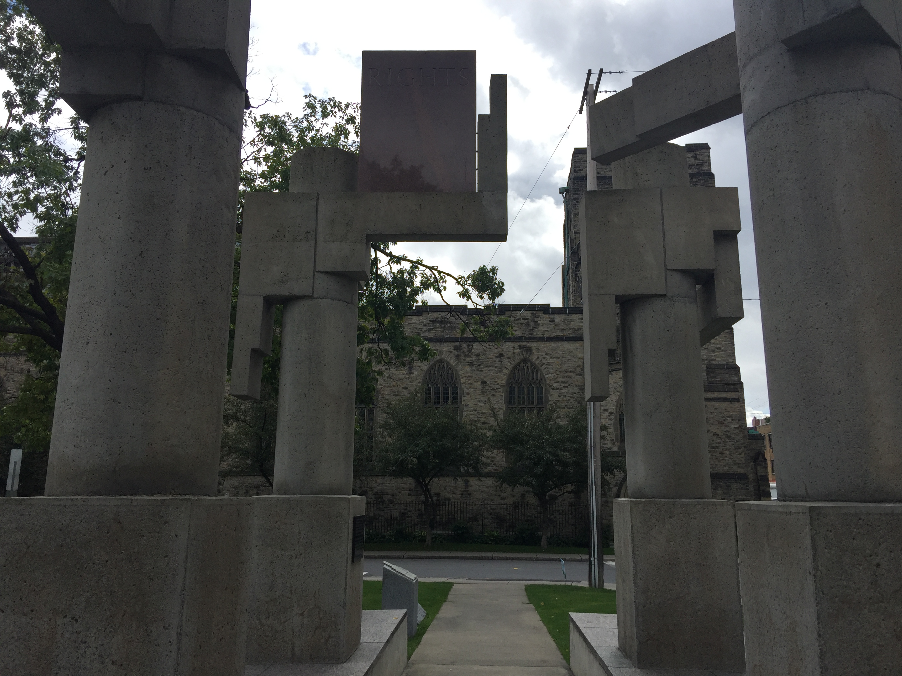
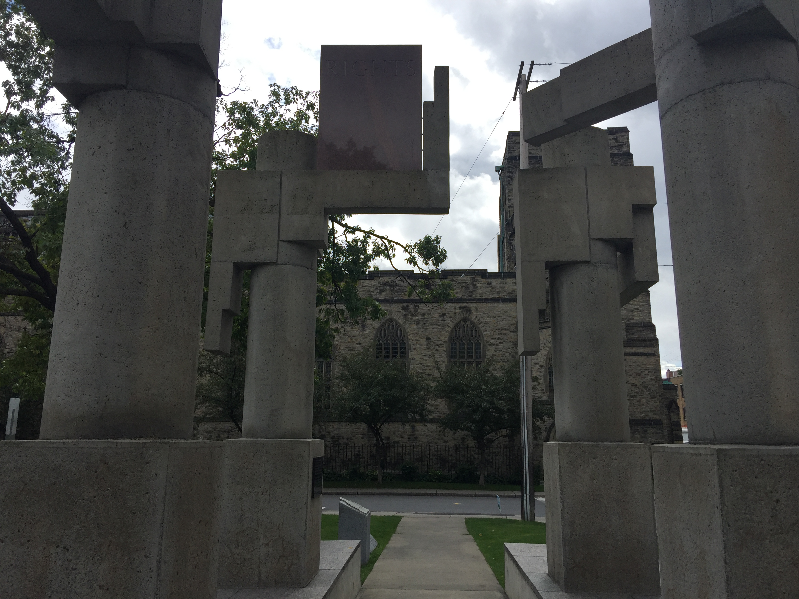
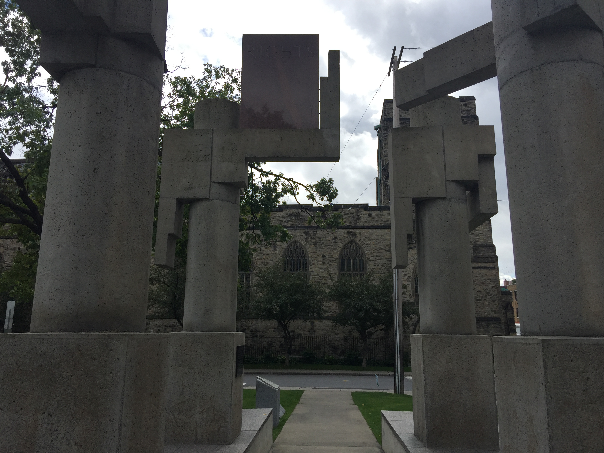

Photographs
 

This page will walk you through some important aspects of this monument and the impressions of the creator of the webpage

This shows a person holding a sign with the word dignity. In my mind it symbolizes the need for people to have an expectation of dignity in their lives.
This shows, if you look carefully, 6 statues of people. It is not obvious at first why
Seeing these languages instantly makes one curious about the validity of these languages and they have aided others in communicating in the world we live in. Having these languages put into stone and publicly shared helps remind us that we nee to embrace the languages of others if we wish to have a society that upholds our values, such as: Equality, Dignity, and Rights for everyone
It is hard to see at first but the sign being help up by the statue is Rights. What this means to me is that Rights needs to be acknoledged seperateley from equality and dignity as they are different.
Held high on the monument in English and French are the words "Equility Dignity Rights" from the United Nations Universal Declaration of Human Rights. These three concepts are inscribed on 73 granite plaques in Aboriginal languages spoken in Canada, using symbolics or Roman orthography. Grouped in languages families the plaques are located on the interior walls known as the "House of Canada."
Type here: